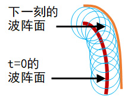
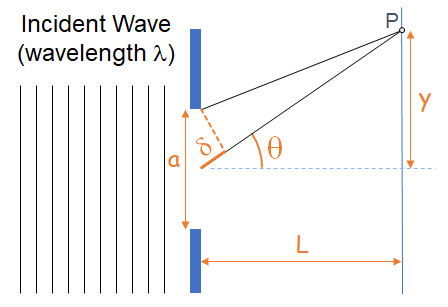
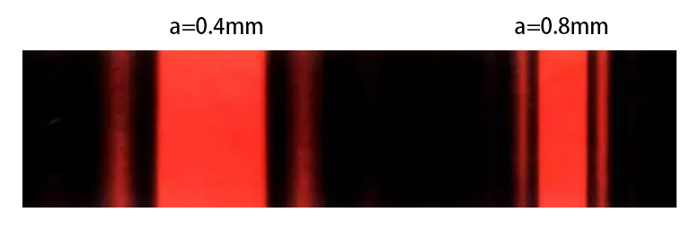
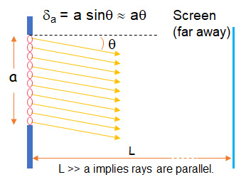
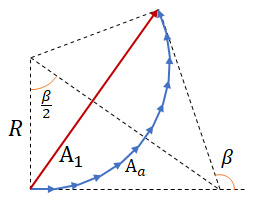
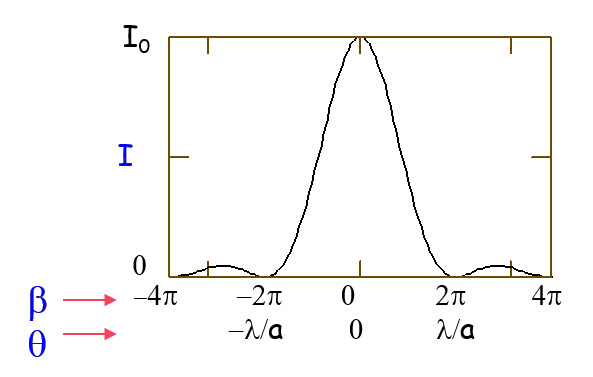
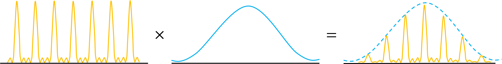

光的衍射
波具有衍射性质，即传播过程遇到障碍物时，能绕过障碍物边缘前进。
惠更斯原理
光的衍射性可以用惠更斯原理进行描述。其基本内容为：
波前的每一点可以认为是产生球面次波的点波源，而以后任何时刻的波前则可看作是这些次波的包络。

菲涅耳在惠更斯原理基础上提出次波相互间可以发生干涉，使得这一理论能够同时符合干涉现象的结果。
单缝衍射
我们研究光通过单一光缝的情况。假定光缝宽度为 $a$ ，光波长为 $\lambda$ 。单缝衍射的模型如下图所示：

第一极小
考虑衍射后的第一极小（第一级暗条纹）的位置 $\mathrm{P}$ 。
利用惠更斯原理，将缝上每一点作为子波源，只需上半部分与下半部分平移 $\frac a2$ 的对应位置相位差为 $\pi$ 即可。此时有距离差 $\delta=\frac\lambda2$ 。
由于 $a\ll y\ll L$，存在关系 $$ \delta=\frac a2 \sin\theta = \frac\lambda2\quad\Rightarrow\ \sin\theta_{\mathrm{min},1}=\frac\lambda{a}\approx\tan\theta=\frac{y_{\mathrm{min},1}}{L} $$ 因此，单缝衍射中央亮条纹的宽度为 $$ W=2{y_{\mathrm{min},1}}=\frac{\lambda{L}}{a} $$
由此可见，光缝宽度与衍射图案宽度成反比。此结论符合实验结果。

第 $\mathrm{n}$ 极小
同理，对于第 $\mathrm{n}$ 极小，只需要对应 $\frac{a}{2n}$ 位置的相位差为 $\pi$ 即可。
此时存在关系 $$ \delta=\frac {a}{2n} \sin\theta = \frac\lambda2\quad\Rightarrow\ \sin\theta_{\mathrm{min},1}=\frac{n\lambda}{a}\approx\tan\theta=\frac{y}{L} $$
单缝衍射光强
假设输入光的强度为 $I_0$ 。
将缝宽为 $a$ 的光缝无限分割为 $M$ 个子波源。光缝两端的路程差 $\delta=a\sin\theta\approx a\theta$。

假设输入波振幅为 $A_0$ ，总相位差为 $\phi=2\pi\frac{\delta}{\lambda}$ ，单个子波源间相位差为 $\phi_a=\frac\phi{M}=2\pi\frac{\delta}{M\lambda}$ ，因此存在关系 $$ \beta=M\phi_a=2\pi\frac{\delta}{\lambda}=2\pi \frac{a\sin\theta}{\lambda}\approx2\pi\frac{a\theta}{\lambda}\approx{2\pi\frac{ay}{\lambda{L}}} $$ 
分析向量图几何关系，于是有 $$ \cases{\frac{A_1}{2}=R\sin{\frac\beta2}\newline{A_0=lim_{M\rightarrow\infin}MA_a=R\beta}}\quad\Rightarrow{A_1=A_0\frac{\sin\frac{\beta}{2}}{\beta/2}} $$ 因此该处的光强 $$ I_1=I_0{\left(\frac{\sin\frac{\beta}{2}}{\beta/2}\right)}^2 $$ 
多缝干涉
考虑多缝干涉的干涉图案，其光强公式为 $$ I_\mathrm{N}=I_1{\left(\frac{\sin\left(\frac{N\phi}{2}\right)}{\sin{\frac{\phi}{2}}}\right)}^2 $$ 以及单缝衍射的光强公式 $$ I_1=I_0{\left(\frac{\sin\frac{\beta}{2}}{\beta/2}\right)}^2 $$ 可以获得实际多缝干涉的光强公式： $$ I_\mathrm{N}=I_0{\left(\frac{\sin\frac{\beta}{2}}{\beta/2}\right)}^2{\left(\frac{\sin\left(\frac{N\phi}{2}\right)}{\sin{\frac{\phi}{2}}}\right)}^2 $$ 